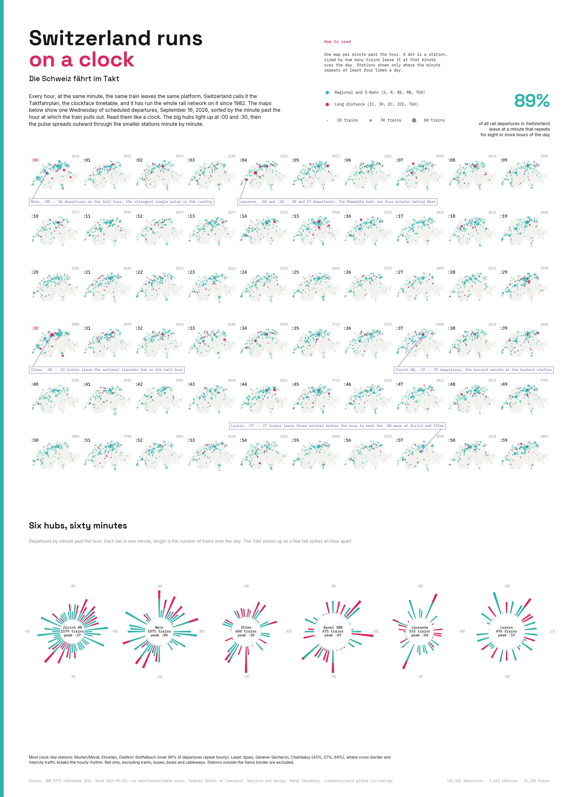

Every hour, at the same minute, the same train leaves the same platform. Switzerland has run its whole rail network on a clockface timetable, the Taktfahrplan, since 1982. This poster takes one scheduled Wednesday, September 16, 2026, and sorts every rail departure in the country by the minute past the hour at which it leaves. Click the poster for the full size version.
{kind=link}

146,502 departures at 1,625 stations on 15,220 trains. Source: SBB GTFS timetable, feed of 2026-09-12, via opentransportdata.swiss.
What the maps show
Each of the sixty maps is one minute past the hour. A dot is a station, sized by how many trains leave it at that minute across the whole day, so a station with an hourly train at :04 gets a dot of about 18 at the :04 map and nothing at :05. Teal is regional and S-Bahn service, pink is long distance. Stations only appear on a map if that minute repeats at least four times in the day, which strips out the one-off early morning and late night runs and leaves the rhythm.
The clock is visible in the hubs. Bern sends 56 trains out on the full hour, its biggest single minute, and the Romandie hubs run four minutes behind it: Lausanne peaks at :04 and :34. Olten, the transfer point where the Zürich, Basel, Bern and Luzern lines cross, fires at :30. Zürich HB's busiest minute is :37 with 70 departures, and Luzern's is :57, three minutes before the hour, timed so its trains meet the :00 wave at Zürich and Olten.
How clock-like is the network
To measure it I took every combination of station, line and departure minute and counted how many distinct hours of the day it appears in. If a line leaves a station at the same minute in eight or more hours, that slot is on the Takt. 89 percent of all rail departures inside Switzerland sit on such a slot.
| Station | Departures | On the Takt |
|---|---|---|
| Murten/Morat | 166 | 100% |
| Etzwilen | 150 | 100% |
| Dietikon Stoffelbach | 152 | 100% |
| Zürich HB | 1,579 | 89% |
| Bern | 1,071 | 88% |
| Genève | 458 | 68% |
| Thun | 264 | 66% |
| Genève-Sécheron | 157 | 57% |
| Spiez | 182 | 43% |
The least clock-like stations cluster in two places. Around Genève the Léman Express and the TER lines into France run on French timings, and at Spiez and Thun the Lötschberg and Simplon international trains cut across the local rhythm. The most clock-like stations are small S-Bahn and regional stops where every train is the same line at the same minute all day.
How it was made
The GTFS feed for the 2026 timetable is a 250 MB zip with a 3 GB stop_times file. I filtered routes to rail types (GTFS route_type 100 to 117), resolved which service IDs run on September 16 from calendar.txt and calendar_dates.txt, kept the 19,841 matching trips, then streamed stop_times.txt once to pull their stop events. Platforms were rolled up to their parent station, terminal arrivals were dropped so only departures count, and stations outside the national border were removed with a point-in-polygon test. The poster is a single matplotlib figure: sixty map axes on a fixed grid, six polar axes, and callouts drawn in figure coordinates so the pointer lines land on the right dot.
Two caveats. This is the published schedule, not what ran on the day. And the four-times-a-day filter on the maps hides genuine one-off trains, including most night and international services, which is why the dials at the bottom use the unfiltered counts.
Data: opentransportdata.swiss, Federal Office of Transport, open data. Design after the Swiss infographic tradition of teal, magenta and a mono annotation voice.